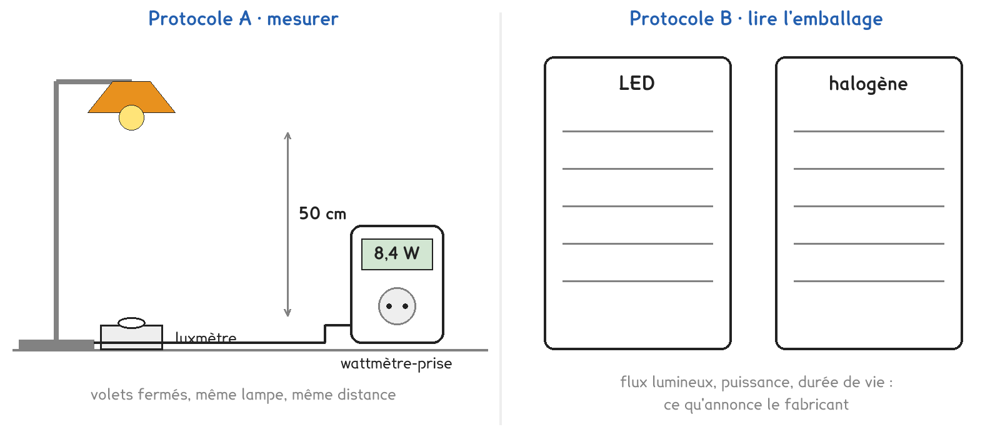
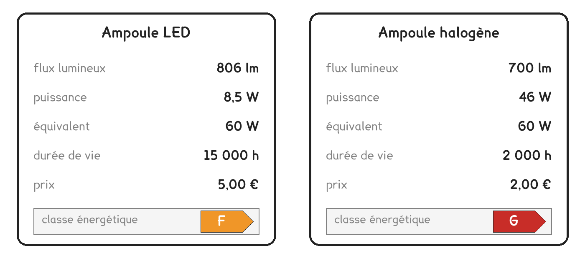
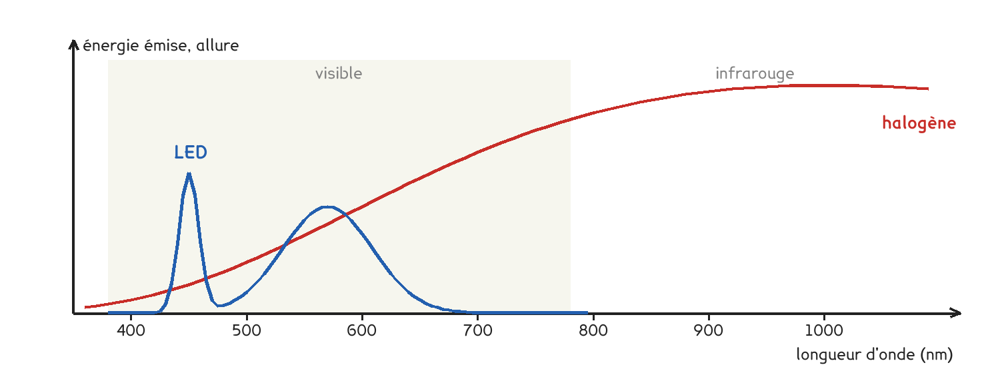

1re ou Tle Bac Pro · toutes spécialités · TP commun CT-14
À lumière égale, quelle lampe consomme le moins, et laquelle coûte le moins sur toute sa vie ?
3 figures
Sujet. Au rayon éclairage, deux ampoules annoncent toutes deux « équivalent 60 W ». La LED coûte 5 €, l’halogène 2 €. Le client hésite : l’halogène est moins chère à l’achat.
Problématique : à lumière égale, quelle lampe consomme le moins, et laquelle coûte le moins sur toute sa vie ?
a) Compléter le tableau des trois grandeurs du TP.
| La grandeur | Son unité | Ce qu’elle dit | Qui la donne |
|---|---|---|---|
| le flux lumineux | le lumen, lm | la lumière émise par la lampe | ……………………… |
| l’éclairement | ……………… | la lumière reçue par une surface | le luxmètre |
| la puissance | ……………… | l’énergie reçue chaque seconde | ……………………… |
b) Sur l’emballage, que veut dire « équivalent 60 W » ? Entourer.
| elle consomme 60 W | elle éclaire comme une lampe à filament de 60 W | elle chauffe comme 60 W |
|---|
Une lampe se juge aussi sur l’énergie qu’elle consomme.
c) Convertir. Le premier est fait.
| 8 W pendant 1 000 h = 8 kWh | 46 W pendant 1 000 h = ……… kWh | 8,5 W pendant 10 000 h = ……… kWh |
|---|
Deux protocoles répondent à la même question. Une partie de la classe prend A, l’autre prend B, et on compare à la fin.

Protocole A · mesurer. La même lampe de bureau reçoit tour à tour les deux ampoules. Un luxmètre posé 50 cm dessous mesure l’éclairement, un wattmètre-prise la puissance.
Protocole B · lire l’emballage. Le fabricant indique le flux lumineux et la puissance. Leur quotient est l’efficacité lumineuse, en lumens par watt.
d) Compléter le tableau pour comparer les deux protocoles.
| Protocole A | Protocole B | |
|---|---|---|
| La lumière, en | lux · lumens | lux · lumens |
| On la mesure ou on la lit | mesure · lit | mesure · lit |
| Le résultat dépend de la lampe de bureau | oui · non | oui · non |
Le choix se fait maintenant, avant de toucher au matériel.
e) Quel protocole prenez-vous ? Justifier en une phrase.
Je prends le protocole ……… parce que ……………………………………………………………………
f) Avant de mesurer : à lumière égale, la LED consomme combien de fois moins ?
2 fois · 6 fois · 20 fois
Avant de commencer
Une ampoule halogène brûle : on ne la change que lampe débranchée et refroidie.
On ne regarde jamais une ampoule allumée de près.
Un seul appareil par wattmètre-prise, jamais de multiprise en cascade.
Document 1 · Les emballages des deux ampoules.

g) Schématiser votre montage, ou vos deux emballages, avec ce que vous relevez.
Le schéma se dessine sur la feuille du TP.
h) Relever et calculer. Pour A, la lumière est E − E₀ en lux ; pour B, le flux en lumens.
| L’ampoule | Lumière (lx ou lm) | Puissance P (W) | Lumière ÷ P |
|---|---|---|---|
| LED | |||
| Halogène |
Le rapport compare les deux ampoules.
i) Calculer combien de fois la LED éclaire plus que l’halogène pour un même watt.
j) Votre prévision de la question f est-elle confirmée ? Comparer avec un groupe qui a pris l’autre protocole : trouve-t-il le même rapport ?
Pour tous, avec les emballages : on éclaire une pièce 10 000 h, soit environ trois heures par jour pendant neuf ans. Le kilowattheure coûte 0,20 €.
k) Compléter le coût de chaque solution sur 10 000 h.
| Sur 10 000 h | Ampoules achetées | Prix d’achat (€) | Énergie (kWh) | Coût de l’énergie (€) | Total (€) |
|---|---|---|---|---|---|
| LED | 1 | ||||
| Halogène |
l) Répondre à la problématique en deux phrases, pour le client du rayon éclairage.
Ce que ce TP a établi, et qui vaut pour toute source de lumière :
À RETENIR
L’efficacité lumineuse d’une lampe est le quotient du flux lumineux par la puissance reçue, en lumens par watt. Une LED en donne environ 100, une halogène environ 15.
Ce qu’une lampe ne transforme pas en lumière visible part en chaleur. Le coût d’une lampe se juge sur toute sa vie : l’énergie pèse bien plus que le prix d’achat.

Voici l’allure de la lumière émise par les deux ampoules. Où part l’essentiel de l’énergie de l’halogène ? Pourquoi chauffe-t-elle autant ?
TP commun de physique-chimie, toutes spécialités. Le travail se fait sur la feuille du TP : cette page en est la version à l'écran, sans les lignes à remplir. Rien n'est enregistré.